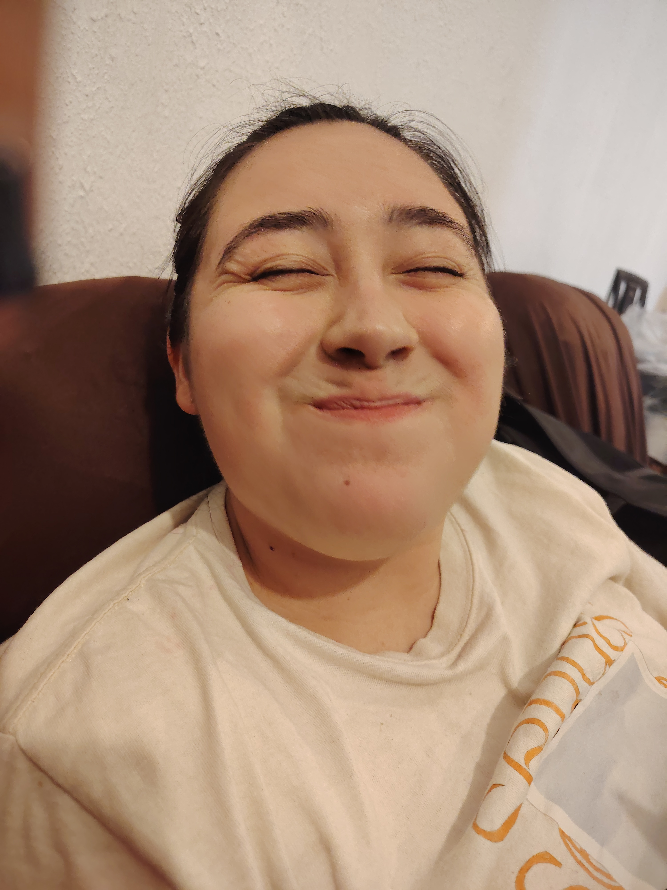
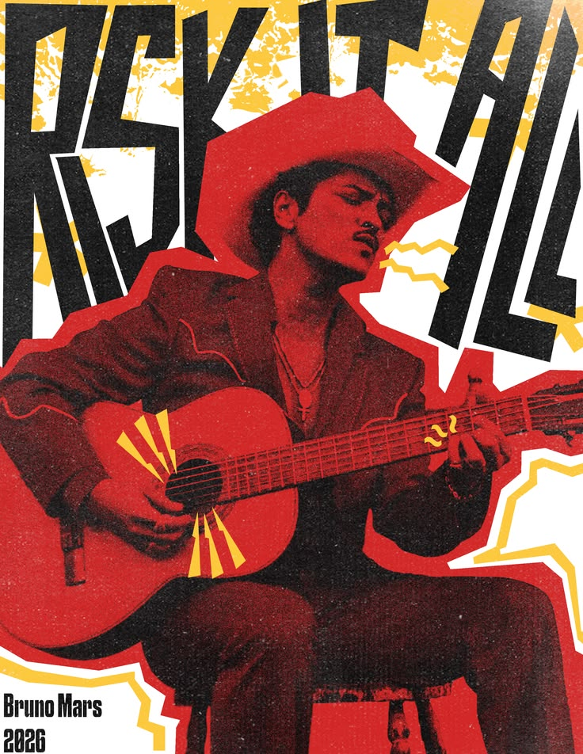
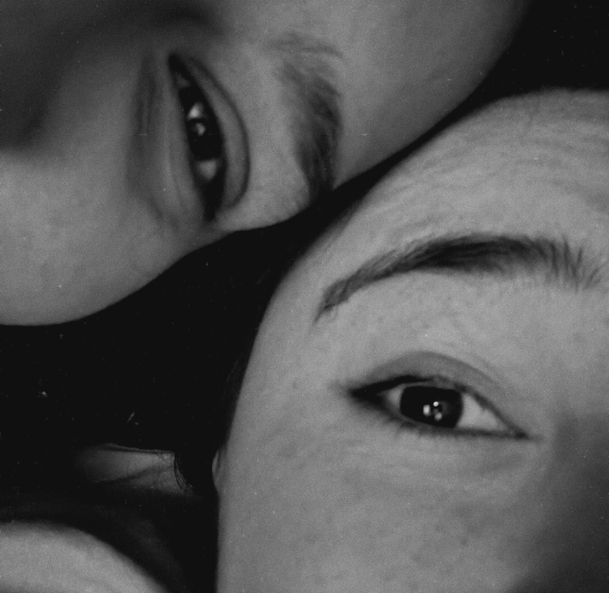

Hola mi amor<33
cómo tai? aparte de preciosa, aparte de bonita, bella, linda, hermosa, sensual, amamama, ñam ñam ñam, yomi yomi skdkskgkd
Sabe que día es hoy? heheheje si no chillo eh kuñaaaaa:(((nocierto sicierto nocierto
Feliz 7 mi corazón<333 gracias por un
mesesito más mi bebé, me haces muy feliz de verdad kskekskfkdfke.
Han pasado días pesaditos y en todos ellos yo te he amado, nunca he dudado del amor que te tengo ni que me tienes hehehehe yo sé que nos amamos mucho y me siento bendecida de que así sea skdkskgkdkfs<333
Gracias por el apoyo que me has brindado estos días que he estado enferma, te agradezco mucho que estes al pendiente de esta pobre macaca ♡

🎀Por alguna razón, esta foto es de mis favoritas ajfkdkfks además de que te la tomé ioooo, es que refleja mucha mucha ternura, te ves preciosa (como siempre) pero ademas tan tranquila, tan tu, tan calmada, , amo ver tu carita tan bonita smfkskfkskfs tus ojitos ahh, me encantai de verdad muchísimo kakskgdkfkdkfksfks que suerte de que una persona tan tan linda comparta su vida conmigo aiaiaia<333

Esta canción es para ti mi amor, pq todo lo que dice soy yooo,yoyoyoyoy ladkskfksfjs espero te guste pq es con mucho cariño y amor, pq pienso en ti cada que la escucho, desde la primera vez que la escuché así fue akfkdkfksks Forma parte de la larga lista de canciones que me recuerdan a ti y es que es inevitable no hacerlo, porque te amo mucho y siento mucho amor por ti, de verdad :((( ahhh

🤍